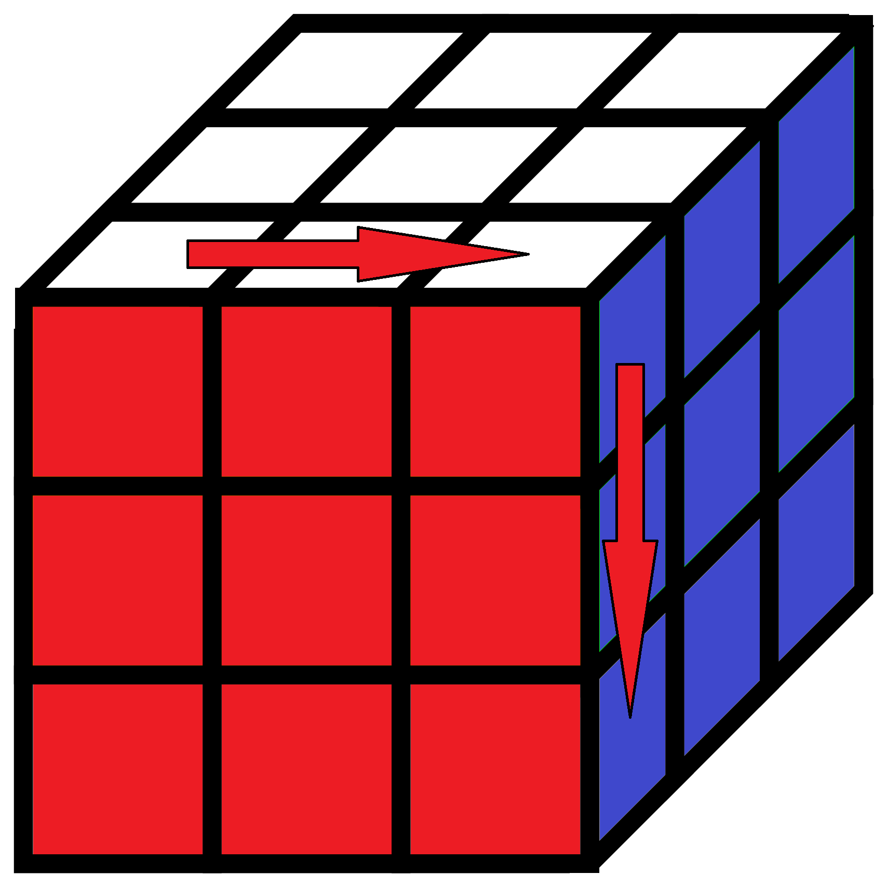
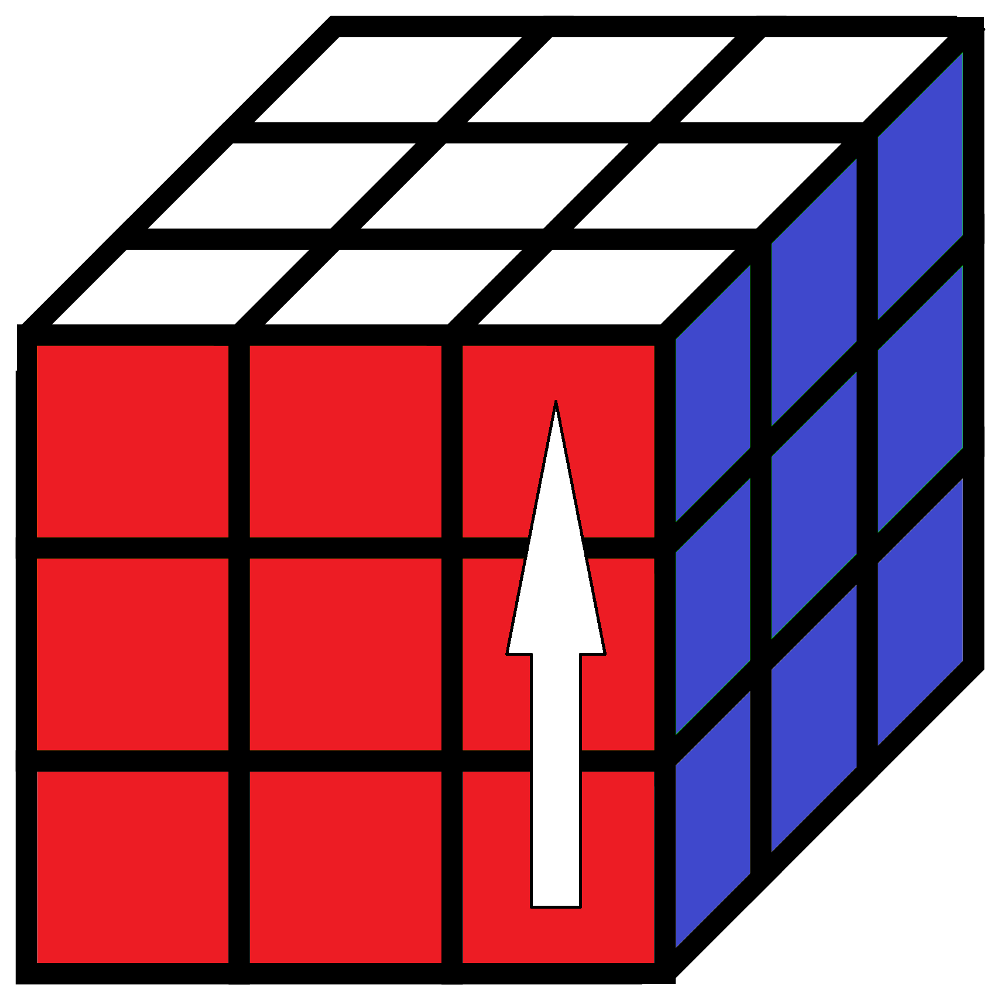
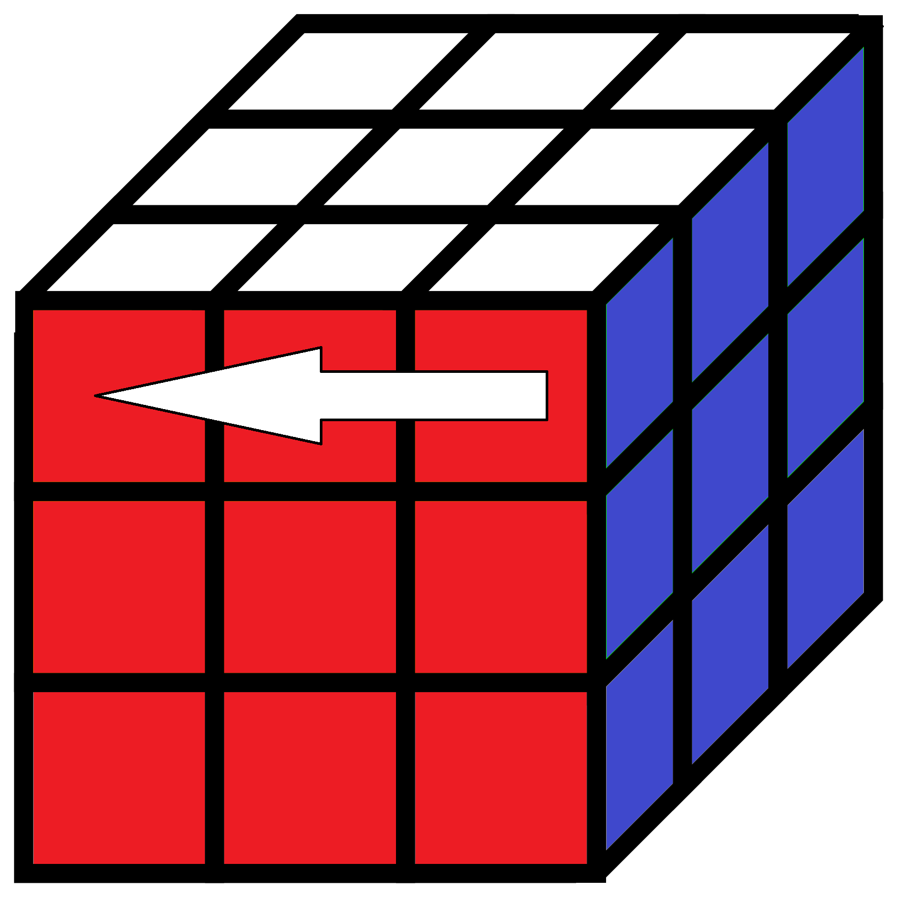
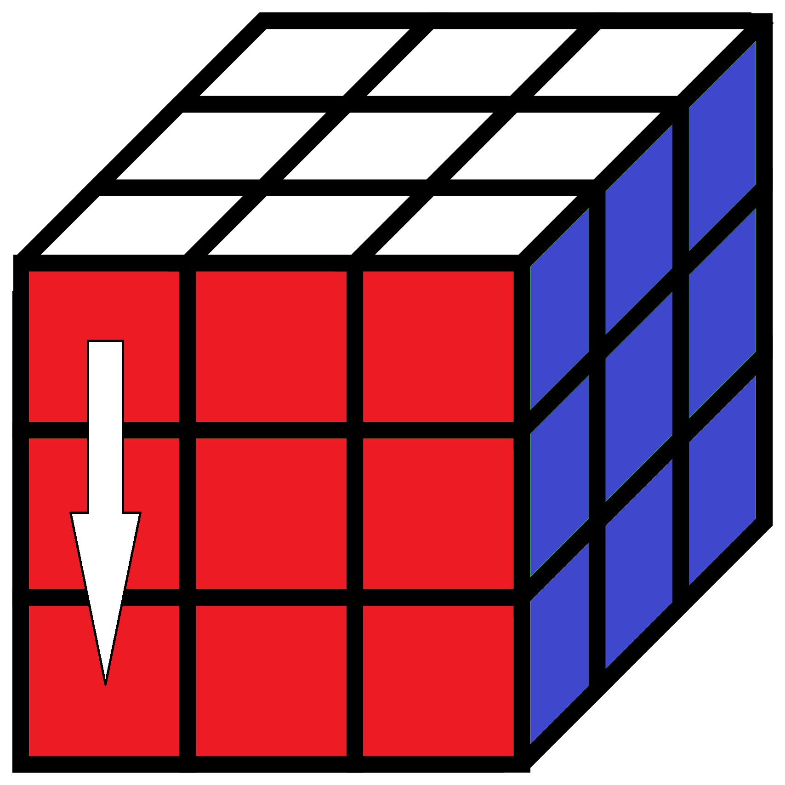
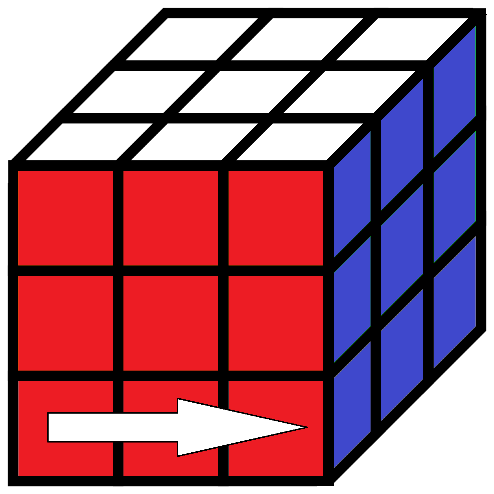

There are many ways to solve the 3X3 Rubik’s cube, but we want to show you one of the easy way to solve the Cube. Further down we explain you step by step how to solve it.
Before we start you have to know these letters:
All Rotations are clockwise.
|  |  |  |  |  |
|
F = front |
R = right |
U = up |
L = left |
D = down |
When there is a 2 after the letter, that means you have to do it twice.